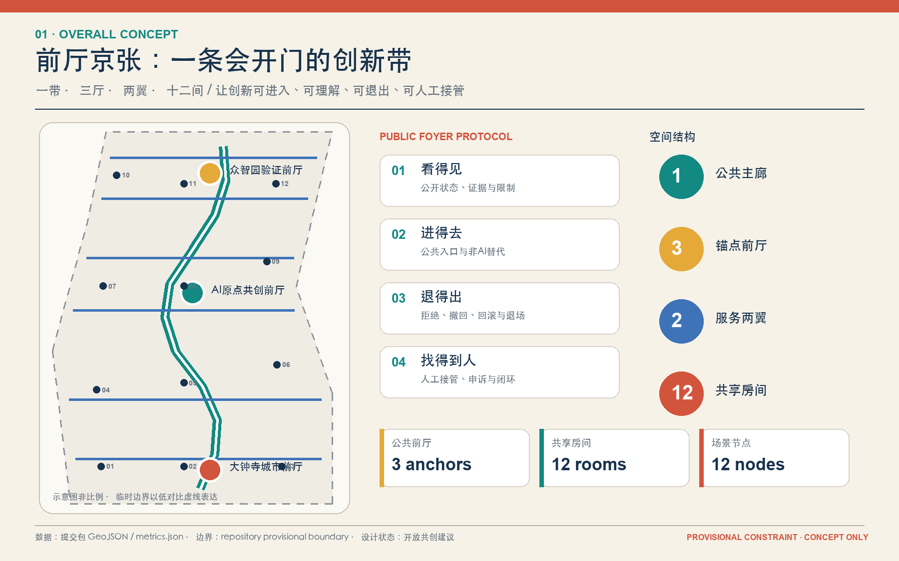
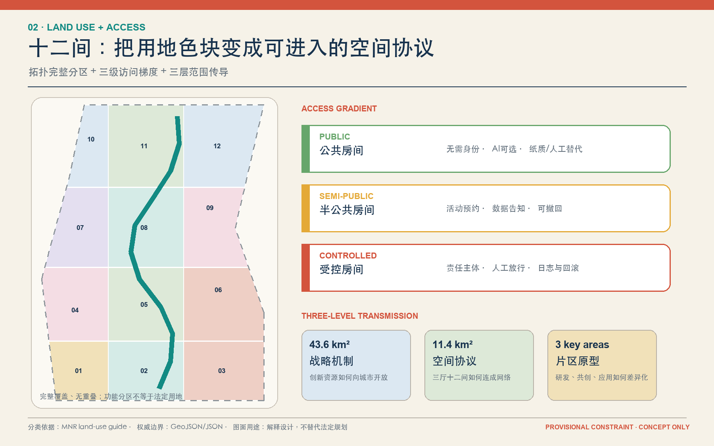
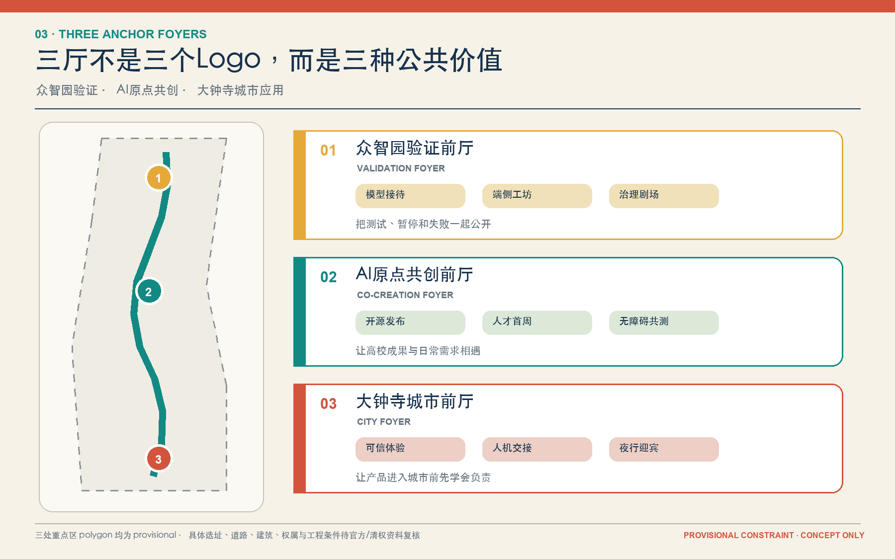
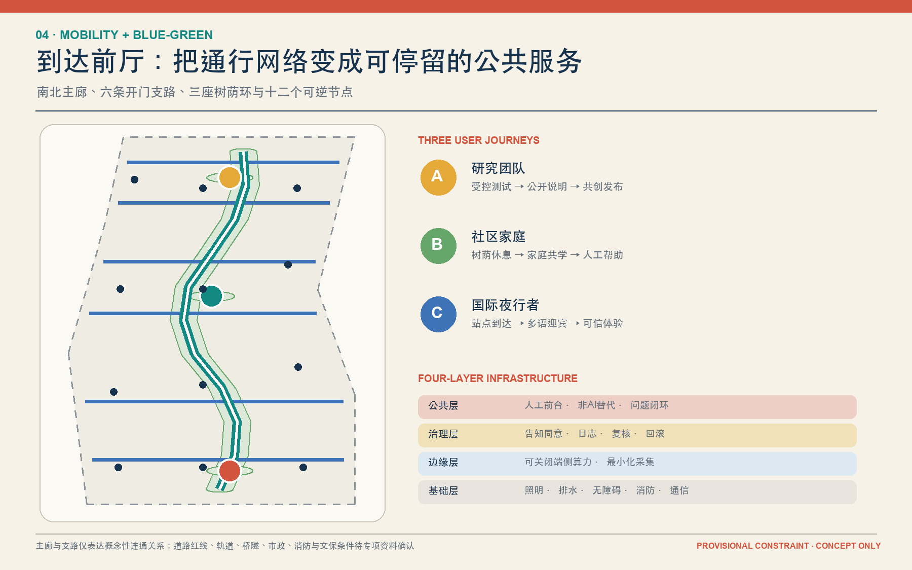
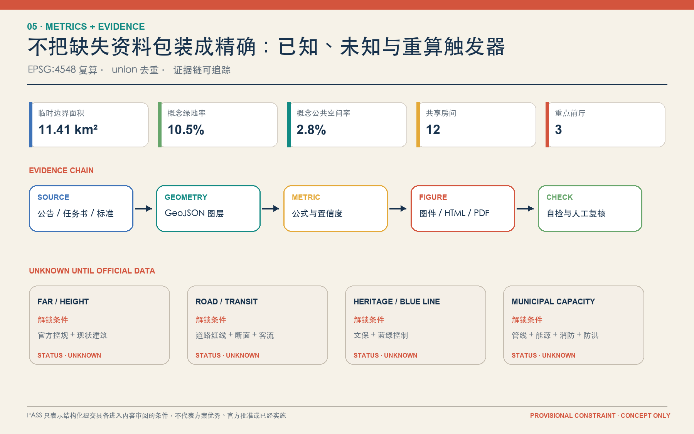

众智园验证前厅
模型接待、端侧工坊、治理剧场。把测试、暂停和失败一起公开。
一条公共主廊、三座锚点前厅、两翼服务接口和十二个共享房间，让 AI 创新可进入、可理解、可退出、可人工接管。
PROVISIONAL CONSTRAINT · CONCEPT ONLY临时边界低对比显示，设计重点落在主廊、三厅、两翼、十二间和四条公共协议。

HTML 值与 metrics.json 一致；面积和比例受 provisional boundary 限制。
43.6 km² 战略机制 - 11.4 km² 空间协议 - 三处重点区片区原型。

研发验证、近校共创和城市应用三种公共价值。
模型接待、端侧工坊、治理剧场。把测试、暂停和失败一起公开。
开源发布、人才首周、无障碍共测。让高校成果与日常需求相遇。
可信体验、人机交接、夜行迎宾。让产品进入城市前先学会负责。

南北主廊、六条开门支路、树荫环、概念载体和三期更新项目形成一套可逆网络。

四项产业测试验证场景；全部保留非AI替代、人工复核、申诉与退场门。
登记测试目的、数据、责任人和退场门
低延迟、能耗与故障可复测
公开通过、暂停与失败案例
版本、许可证与贡献者可追溯
AI导航，复杂事项转人工
翻译保留原文并可人工校正
当事人同意、匿名汇总、问题闭环
先说明风险，再允许试用和退出
自动服务必须有责任主体和时限
史料可核查，不确定性可见
儿童不做人脸识别，保留无屏活动
多语导视、可见人工岗和休息点
公告 1.3、1.4、1.5 与 agent.1-agent.6 均由正文、图层、指标、A3/A0 和本页定位。

sources.json → geometry/*.geojson → metrics.json → figures/PDF/HTML → self_check.json
官方公告、清权任务书、本地标准快照、source registry 与六个一手案例。临时边界仅用于 intake。
官方边界、控规、道路、建筑、产权、文保、市政和运营主体待补；详见 assumptions.json。